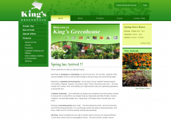

King's Greenhouse came to DRT Media with a static website and wanted it update to a full CMS with a private members area. They also wanted the website to be search engine optimized. The new website allowed for each page of the website to be easily edited using a the FCKEditor WYSIWYG. Also, each feature of the site (products, events, etc) could be added, deleted and edited using only the web interface provided.